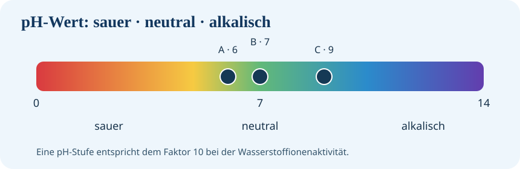

Ablauf: 4 Min. Einführung → 3 Min. Sicherung → 4 Min. Anwenden → 4 Min. Praxis → 3 Min. Kontrolle → 5 Min. Selbsttest. Die Lernzeit beginnt automatisch beim Öffnen der Seite.
Weiterlernen mit BayernCloud Schule
Im mebis-Kursordner findest du zusätzliches Material zum Thema pH-Wert.
Der Ordner liegt in BayernCloud Schule. Für den Zugriff kann eine Anmeldung mit einem berechtigten Konto erforderlich sein. Alle Aufgaben auf dieser Lernwerkstatt-Seite funktionieren weiterhin unabhängig davon.

Sechs Schritte zum Lernerfolg
Wähle die nächste Phase. Der Timer startet automatisch und läuft ohne Pause oder Neustart.
Entdecken: Die pH-Skala
DIGITALES ARBEITSBLATT · Lies den Infotext, verändere das Modell und dokumentiere deine Antwort.
Der pH-Wert beschreibt, wie sauer oder alkalisch eine wässrige Lösung ist. Bei 25 °C gilt: pH 7 ist neutral, darunter sauer, darüber alkalisch. Die Skala ist logarithmisch: Ein pH-Schritt bedeutet den Faktor 10 bei der Wasserstoffionenaktivität.
- Stelle pH 4 ein. Ordne den Zustand ein.
- Vergleiche pH 4 und pH 6: Um welchen Faktor unterscheidet sich die Wasserstoffionenaktivität?
- Stelle pH 9 ein. Beschreibe die Veränderung.
Modell: Die Farbe visualisiert die Skala. Sie ersetzt keine echte Messung und zeigt nicht die Farbe des Wassers.
Gemeinsamer Stopp 1: pH-Grundlagen
Was beschreibt der pH-Wert?
Was bedeutet pH 7 bei 25 °C?
Wie unterscheidest du sauer, neutral und alkalisch?
Was bedeutet die logarithmische Skala?
Wie unterscheiden sich pH 4 und pH 6 bei der Wasserstoffionenaktivität?
Woher stammt die Bezeichnung pH?
Anwenden: Drei Wasserproben
Praxisfall: Du erhältst Messwerte aus drei Wasserproben. Entscheide, welche Aussage fachlich korrekt ist.
Entscheidung: Welche Aussage ist richtig?
Übertragen: Richtig messen
TRANSFER · Formuliere eine technische Begründung; vergleiche sie im anschließenden Kompetenzcheck.
Bei der Wassertechnik gibt es mehrere Messverfahren: Teststreifen (schnelle Orientierung), Indikatorlösungen (Farbumschlag) und pH-Elektroden (elektronische Messung). Für verlässliche Elektrodenmessungen sind Kalibrierung und sachgerechte Handhabung wichtig.
Gemeinsamer Stopp 2: Messen und Anwenden
Wie ordnest du Wasserproben mit pH 6, 7 und 9 ein?
Was unterscheiden Teststreifen, Indikatorlösungen und pH-Elektroden?
Weshalb muss ein pH-Messgerät kalibriert werden?
Welche Bedeutung hat der pH-Wert für Korrosionsvorgänge?
Warum lässt sich aus dem pH-Wert allein nicht die Eignung für Kupferleitungen ableiten?
Was ist der Unterschied zwischen Wasserhärte und pH-Wert?
Welche weiteren Angaben brauchst du bei einem Kunden mit pH 6,3?
pH-Wert – interaktive Lernkarten
Auftrag: Wähle eine Pflichtkarte und mindestens eine weitere Karte. Beantworte die Fragen und prüfe dich selbst.
0 von 2 Karten abgeschlossen.
Abschließender Kompetenzcheck
Beantworte die Aufgaben ohne nachzuschlagen. Du erhältst nach der Auswertung zu jeder Antwort eine Erklärung.
Für die nächste Lernrunde
Wiederhole offene Fragen, indem du die Simulation erneut durchspielst. Die Inhalte bleiben als digitales Nachschlagewerk verfügbar.
Wissensbox für Interessierte: Woher kommt „pH“?
Der Begriff pH wurde 1909 vom dänischen Chemiker Søren P. L. Sørensen eingeführt. Häufig wird die Abkürzung als potentia hydrogenii („Kraft/Potenz des Wasserstoffs“) erklärt. Diese genaue sprachliche Herleitung ist historisch nicht eindeutig belegt. Fachlich beschreibt der pH-Wert die Aktivität der Wasserstoffionen in einer Lösung.
Vertiefung: Warum ist der pH-Wert logarithmisch?
Der pH-Wert ist definiert durch pH = −log₁₀ a(H⁺), wobei a die dimensionslose Wasserstoffionenaktivität ist. Für einfache verdünnte Lösungen verwendet man näherungsweise die Konzentration.
Ein Unterschied von einer pH-Stufe bedeutet eine Verzehnfachung der Wasserstoffionenaktivität in der jeweils saureren Lösung.
Das ist eine logarithmische Skala: Gleiche Zahlenabstände entsprechen gleichen Faktoren, nicht gleichen absoluten Unterschieden.